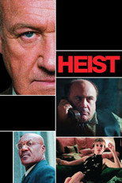

넷플릭스 영화1,342편 중 인기 60편
순서: 넷플릭스 한국 TOP10 에 든 작품을 먼저(최근에 든 순), 그다음은 TMDB 전 세계 인기도 순입니다 — 넷플릭스 외 서비스는 공식 순위를 공개하지 않습니다. 제공처는 JustWatch 자료(2026-11-14 확인)이며 가입 전 서비스에서 최종 확인하세요. 넷플릭스 요금·할인 →
1컬리전 코스 Collision Course영화 · 2026 · 스릴러 · 드라마 · 122분넷플릭스 한국 최고 2위2가능한 사랑 Possible Love영화 · 2026 · 드라마 · 165분넷플릭스 한국 최고 1위3시한부 1년, 남자를 사다 One Year to Live, Buy a Man영화 · 2026 · 로맨스 · 드라마 · 109분넷플릭스 한국 최고 3위4호빗: 다섯 군대 전투 The Hobbit: The Battle of the Five Armies영화 · 2014 · 액션 · 모험 · 144분넷플릭스 한국 최고 5위5호빗: 뜻밖의 여정 The Hobbit: An Unexpected Journey영화 · 2012 · 모험 · SF/판타지 · 169분 · 왓챠에도넷플릭스 한국 최고 4위6미 비포 유 Me Before You영화 · 2016 · 드라마 · 로맨스 · 110분넷플릭스 한국 최고 7위7호빗: 스마우그의 폐허 The Hobbit: The Desolation of Smaug영화 · 2013 · SF/판타지 · 모험 · 161분넷플릭스 한국 최고 6위8 끝장수사 The Ultimate Duo영화 · 2026 · 코미디 · 범죄 · 98분넷플릭스 한국 최고 1위11
끝장수사 The Ultimate Duo영화 · 2026 · 코미디 · 범죄 · 98분넷플릭스 한국 최고 1위11 허리케인을 거슬러 Surviving Hurricane Otis영화 · 2026 · 드라마 · 97분넷플릭스 한국 최고 1위12
허리케인을 거슬러 Surviving Hurricane Otis영화 · 2026 · 드라마 · 97분넷플릭스 한국 최고 1위12 이블 데드 번 Evil Dead Burn영화 · 2026 · 공포 · 110분넷플릭스 한국 최고 1위13
이블 데드 번 Evil Dead Burn영화 · 2026 · 공포 · 110분넷플릭스 한국 최고 1위13 드롭 Drop영화 · 2025 · 미스터리 · 스릴러 · 95분넷플릭스 한국 최고 3위14
드롭 Drop영화 · 2025 · 미스터리 · 스릴러 · 95분넷플릭스 한국 최고 3위14 아머드 Armored영화 · 2009 · 액션 · 범죄 · 87분넷플릭스 한국 최고 7위15
아머드 Armored영화 · 2009 · 액션 · 범죄 · 87분넷플릭스 한국 최고 7위15 눈동자 The Eyes영화 · 2026 · 스릴러 · 공포 · 106분넷플릭스 한국 최고 1위16
눈동자 The Eyes영화 · 2026 · 스릴러 · 공포 · 106분넷플릭스 한국 최고 1위16 두사부일체 My Boss My Hero영화 · 2001 · 액션 · 코미디 · 98분 · 티빙에도넷플릭스 한국 최고 8위17목 Kubi영화 · 2023 · 역사 · 액션 · 131분넷플릭스 한국 최고 8위18
두사부일체 My Boss My Hero영화 · 2001 · 액션 · 코미디 · 98분 · 티빙에도넷플릭스 한국 최고 8위17목 Kubi영화 · 2023 · 역사 · 액션 · 131분넷플릭스 한국 최고 8위18 짐승들 Animals영화 · 2026 · 스릴러 · 드라마 · 109분넷플릭스 한국 최고 2위19
짐승들 Animals영화 · 2026 · 스릴러 · 드라마 · 109분넷플릭스 한국 최고 2위19 툼 레이더 Tomb Raider영화 · 2018 · 액션 · 모험 · 118분넷플릭스 한국 최고 3위20
툼 레이더 Tomb Raider영화 · 2018 · 액션 · 모험 · 118분넷플릭스 한국 최고 3위20 이반리 장만옥 Manok영화 · 2026 · 코미디 · 드라마 · 109분넷플릭스 한국 최고 9위21
이반리 장만옥 Manok영화 · 2026 · 코미디 · 드라마 · 109분넷플릭스 한국 최고 9위21 노보케인 Novocaine영화 · 2025 · 액션 · 코미디 · 110분넷플릭스 한국 최고 7위22
노보케인 Novocaine영화 · 2025 · 액션 · 코미디 · 110분넷플릭스 한국 최고 7위22 벤허 Ben-Hur영화 · 2016 · 액션 · 역사 · 123분넷플릭스 한국 최고 8위23
벤허 Ben-Hur영화 · 2016 · 액션 · 역사 · 123분넷플릭스 한국 최고 8위23 하나 코리아 Hana Korea영화 · 2026 · 드라마 · 106분넷플릭스 한국 최고 3위24
하나 코리아 Hana Korea영화 · 2026 · 드라마 · 106분넷플릭스 한국 최고 3위24 행복의 나라 Land of Happiness영화 · 2024 · 드라마 · 105분넷플릭스 한국 최고 4위25
행복의 나라 Land of Happiness영화 · 2024 · 드라마 · 105분넷플릭스 한국 최고 4위25 유나바머: 비밀 실험 UNABOMBER영화 · 2026 · 스릴러 · 드라마 · 101분넷플릭스 한국 최고 2위26
유나바머: 비밀 실험 UNABOMBER영화 · 2026 · 스릴러 · 드라마 · 101분넷플릭스 한국 최고 2위26 필사의 추격 The Desperate Chase영화 · 2024 · 액션 · 모험 · 110분넷플릭스 한국 최고 3위27
필사의 추격 The Desperate Chase영화 · 2024 · 액션 · 모험 · 110분넷플릭스 한국 최고 3위27 쉘터 Shelter영화 · 2026 · 액션 · 범죄 · 108분 · 왓챠, 티빙에도넷플릭스 한국 최고 1위28
쉘터 Shelter영화 · 2026 · 액션 · 범죄 · 108분 · 왓챠, 티빙에도넷플릭스 한국 최고 1위28 모범시민 Law Abiding Citizen영화 · 2009 · 드라마 · 범죄 · 108분넷플릭스 한국 최고 9위29
모범시민 Law Abiding Citizen영화 · 2009 · 드라마 · 범죄 · 108분넷플릭스 한국 최고 9위29 타이탄 Clash of the Titans영화 · 2010 · 모험 · SF/판타지 · 106분넷플릭스 한국 최고 4위30
타이탄 Clash of the Titans영화 · 2010 · 모험 · SF/판타지 · 106분넷플릭스 한국 최고 4위30 양들의 침묵 The Silence of the Lambs영화 · 1991 · 범죄 · 스릴러 · 118분넷플릭스 한국 최고 6위31
양들의 침묵 The Silence of the Lambs영화 · 1991 · 범죄 · 스릴러 · 118분넷플릭스 한국 최고 6위31 오케이 마담 OK! Madam영화 · 2020 · 코미디 · 액션 · 100분 · 왓챠, 티빙에도넷플릭스 한국 최고 2위32
오케이 마담 OK! Madam영화 · 2020 · 코미디 · 액션 · 100분 · 왓챠, 티빙에도넷플릭스 한국 최고 2위32 트로이 Troy영화 · 2004 · 액션 · 모험 · 163분넷플릭스 한국 최고 3위33
트로이 Troy영화 · 2004 · 액션 · 모험 · 163분넷플릭스 한국 최고 3위33 테넷 Tenet영화 · 2020 · 액션 · 스릴러 · 150분넷플릭스 한국 최고 5위34
테넷 Tenet영화 · 2020 · 액션 · 스릴러 · 150분넷플릭스 한국 최고 5위34 블랙 백 Black Bag영화 · 2025 · 미스터리 · 스릴러 · 94분넷플릭스 한국 최고 2위35
블랙 백 Black Bag영화 · 2025 · 미스터리 · 스릴러 · 94분넷플릭스 한국 최고 2위35 무사 The Warriors영화 · 2001 · 역사 · 드라마 · 158분 · 웨이브에도넷플릭스 한국 최고 1위36
무사 The Warriors영화 · 2001 · 역사 · 드라마 · 158분 · 웨이브에도넷플릭스 한국 최고 1위36 허큘리스 Hercules영화 · 2014 · 액션 · 모험 · 98분 · 왓챠에도넷플릭스 한국 최고 4위37
허큘리스 Hercules영화 · 2014 · 액션 · 모험 · 98분 · 왓챠에도넷플릭스 한국 최고 4위37 소실점 Vanishing Point영화 · 2026 · 미스터리 · 스릴러 · 140분넷플릭스 한국 최고 2위38
소실점 Vanishing Point영화 · 2026 · 미스터리 · 스릴러 · 140분넷플릭스 한국 최고 2위38 마고 Margaux영화 · 2022 · 공포 · SF/판타지 · 104분넷플릭스 한국 최고 5위39
마고 Margaux영화 · 2022 · 공포 · SF/판타지 · 104분넷플릭스 한국 최고 5위39 신의 악단: 찬가 Choir of God: Anthem영화 · 2025 · 드라마 · 음악 · 111분넷플릭스 한국 최고 3위40
신의 악단: 찬가 Choir of God: Anthem영화 · 2025 · 드라마 · 음악 · 111분넷플릭스 한국 최고 3위40 글로리데이 One Way Trip영화 · 2016 · 드라마 · 93분 · 왓챠에도넷플릭스 한국 최고 8위41
글로리데이 One Way Trip영화 · 2016 · 드라마 · 93분 · 왓챠에도넷플릭스 한국 최고 8위41 위스퍼맨 The Whisper Man영화 · 2026 · 범죄 · 드라마 · 114분넷플릭스 한국 최고 2위42
위스퍼맨 The Whisper Man영화 · 2026 · 범죄 · 드라마 · 114분넷플릭스 한국 최고 2위42 블라인드 사이드 The Blind Side영화 · 2009 · 드라마 · 128분 · 왓챠에도넷플릭스 한국 최고 9위43
블라인드 사이드 The Blind Side영화 · 2009 · 드라마 · 128분 · 왓챠에도넷플릭스 한국 최고 9위43 간다리 Gandhari영화 · 2026 · 액션 · 드라마 · 117분넷플릭스 한국 최고 5위44아나콘다 4: 피의 제전 Anacondas: Trail of Blood영화 · 2009 · 모험 · 공포 · 88분넷플릭스 한국 최고 5위45아나콘다 3: 오프스프링 Anaconda 3: Offspring영화 · 2008 · 공포 · 모험 · 91분넷플릭스 한국 최고 7위46매그니피센트 7 The Magnificent Seven영화 · 2016 · 모험 · 액션 · 133분 · 왓챠에도넷플릭스 한국 최고 7위47더 시크릿 우먼 The Secret Woman영화 · 2026 · 드라마 · 스릴러 · 119분넷플릭스 한국 최고 4위48울프맨 Wolf Man영화 · 2025 · 공포 · 스릴러 · 103분넷플릭스 한국 최고 9위49하드코: 라스트 미션 The Hard Corps영화 · 2005 · 액션 · 스릴러 · 110분넷플릭스 한국 최고 8위50스파이더맨: 홈커밍 Spider-Man: Homecoming영화 · 2017 · 액션 · 모험 · 133분 · 웨이브, 왓챠에도넷플릭스 한국 최고 3위51엘 차포를 체포하라 Facing El Chapo영화 · 2026 · 범죄 · 액션 · 91분넷플릭스 한국 최고 4위52라스트 하우스 The Last House영화 · 2026 · 공포 · SF/판타지 · 110분넷플릭스 한국 최고 1위53와일드 씽 Wild Sing영화 · 2026 · 코미디 · 음악 · 108분넷플릭스 한국 최고 1위54스파이더맨: 파 프롬 홈 Spider-Man: Far from Home영화 · 2019 · 액션 · 모험 · 129분 · 애플TV+, 웨이브, 티빙에도넷플릭스 한국 최고 4위55비키퍼 The Beekeeper영화 · 2024 · 액션 · 범죄 · 106분 · 웨이브, 왓챠에도넷플릭스 한국 최고 1위56수어사이드 스쿼드 Suicide Squad영화 · 2016 · 액션 · 모험 · 122분 · 왓챠에도넷플릭스 한국 최고 7위57크레이들 2 그레이브 Cradle 2 the Grave영화 · 2003 · 액션 · 범죄 · 101분넷플릭스 한국 최고 9위58최후의 인류 Extinction영화 · 2015 · 공포 · SF/판타지 · 110분넷플릭스 한국 최고 3위59엣지 오브 투모로우 Edge of Tomorrow영화 · 2014 · 액션 · SF/판타지 · 113분 · 웨이브, 왓챠에도넷플릭스 한국 최고 7위60남편들 Husbands in Action영화 · 2026 · 코미디 · 액션 · 110분넷플릭스 한국 최고 1위
간다리 Gandhari영화 · 2026 · 액션 · 드라마 · 117분넷플릭스 한국 최고 5위44아나콘다 4: 피의 제전 Anacondas: Trail of Blood영화 · 2009 · 모험 · 공포 · 88분넷플릭스 한국 최고 5위45아나콘다 3: 오프스프링 Anaconda 3: Offspring영화 · 2008 · 공포 · 모험 · 91분넷플릭스 한국 최고 7위46매그니피센트 7 The Magnificent Seven영화 · 2016 · 모험 · 액션 · 133분 · 왓챠에도넷플릭스 한국 최고 7위47더 시크릿 우먼 The Secret Woman영화 · 2026 · 드라마 · 스릴러 · 119분넷플릭스 한국 최고 4위48울프맨 Wolf Man영화 · 2025 · 공포 · 스릴러 · 103분넷플릭스 한국 최고 9위49하드코: 라스트 미션 The Hard Corps영화 · 2005 · 액션 · 스릴러 · 110분넷플릭스 한국 최고 8위50스파이더맨: 홈커밍 Spider-Man: Homecoming영화 · 2017 · 액션 · 모험 · 133분 · 웨이브, 왓챠에도넷플릭스 한국 최고 3위51엘 차포를 체포하라 Facing El Chapo영화 · 2026 · 범죄 · 액션 · 91분넷플릭스 한국 최고 4위52라스트 하우스 The Last House영화 · 2026 · 공포 · SF/판타지 · 110분넷플릭스 한국 최고 1위53와일드 씽 Wild Sing영화 · 2026 · 코미디 · 음악 · 108분넷플릭스 한국 최고 1위54스파이더맨: 파 프롬 홈 Spider-Man: Far from Home영화 · 2019 · 액션 · 모험 · 129분 · 애플TV+, 웨이브, 티빙에도넷플릭스 한국 최고 4위55비키퍼 The Beekeeper영화 · 2024 · 액션 · 범죄 · 106분 · 웨이브, 왓챠에도넷플릭스 한국 최고 1위56수어사이드 스쿼드 Suicide Squad영화 · 2016 · 액션 · 모험 · 122분 · 왓챠에도넷플릭스 한국 최고 7위57크레이들 2 그레이브 Cradle 2 the Grave영화 · 2003 · 액션 · 범죄 · 101분넷플릭스 한국 최고 9위58최후의 인류 Extinction영화 · 2015 · 공포 · SF/판타지 · 110분넷플릭스 한국 최고 3위59엣지 오브 투모로우 Edge of Tomorrow영화 · 2014 · 액션 · SF/판타지 · 113분 · 웨이브, 왓챠에도넷플릭스 한국 최고 7위60남편들 Husbands in Action영화 · 2026 · 코미디 · 액션 · 110분넷플릭스 한국 최고 1위

하이스트 Heist영화 · 2001 · 액션 · 범죄 · 107분넷플릭스 한국 최고 8위9탈주자 Nowhere to Run영화 · 1993 · 액션 · 드라마 · 94분넷플릭스 한국 최고 4위10끝장수사 The Ultimate Duo영화 · 2026 · 코미디 · 범죄 · 98분넷플릭스 한국 최고 1위11허리케인을 거슬러 Surviving Hurricane Otis영화 · 2026 · 드라마 · 97분넷플릭스 한국 최고 1위12이블 데드 번 Evil Dead Burn영화 · 2026 · 공포 · 110분넷플릭스 한국 최고 1위13드롭 Drop영화 · 2025 · 미스터리 · 스릴러 · 95분넷플릭스 한국 최고 3위14아머드 Armored영화 · 2009 · 액션 · 범죄 · 87분넷플릭스 한국 최고 7위15눈동자 The Eyes영화 · 2026 · 스릴러 · 공포 · 106분넷플릭스 한국 최고 1위16두사부일체 My Boss My Hero영화 · 2001 · 액션 · 코미디 · 98분 · 티빙에도넷플릭스 한국 최고 8위17목 Kubi영화 · 2023 · 역사 · 액션 · 131분넷플릭스 한국 최고 8위18짐승들 Animals영화 · 2026 · 스릴러 · 드라마 · 109분넷플릭스 한국 최고 2위19툼 레이더 Tomb Raider영화 · 2018 · 액션 · 모험 · 118분넷플릭스 한국 최고 3위20이반리 장만옥 Manok영화 · 2026 · 코미디 · 드라마 · 109분넷플릭스 한국 최고 9위21노보케인 Novocaine영화 · 2025 · 액션 · 코미디 · 110분넷플릭스 한국 최고 7위22벤허 Ben-Hur영화 · 2016 · 액션 · 역사 · 123분넷플릭스 한국 최고 8위23하나 코리아 Hana Korea영화 · 2026 · 드라마 · 106분넷플릭스 한국 최고 3위24행복의 나라 Land of Happiness영화 · 2024 · 드라마 · 105분넷플릭스 한국 최고 4위25유나바머: 비밀 실험 UNABOMBER영화 · 2026 · 스릴러 · 드라마 · 101분넷플릭스 한국 최고 2위26필사의 추격 The Desperate Chase영화 · 2024 · 액션 · 모험 · 110분넷플릭스 한국 최고 3위27쉘터 Shelter영화 · 2026 · 액션 · 범죄 · 108분 · 왓챠, 티빙에도넷플릭스 한국 최고 1위28모범시민 Law Abiding Citizen영화 · 2009 · 드라마 · 범죄 · 108분넷플릭스 한국 최고 9위29타이탄 Clash of the Titans영화 · 2010 · 모험 · SF/판타지 · 106분넷플릭스 한국 최고 4위30양들의 침묵 The Silence of the Lambs영화 · 1991 · 범죄 · 스릴러 · 118분넷플릭스 한국 최고 6위31오케이 마담 OK! Madam영화 · 2020 · 코미디 · 액션 · 100분 · 왓챠, 티빙에도넷플릭스 한국 최고 2위32트로이 Troy영화 · 2004 · 액션 · 모험 · 163분넷플릭스 한국 최고 3위33테넷 Tenet영화 · 2020 · 액션 · 스릴러 · 150분넷플릭스 한국 최고 5위34블랙 백 Black Bag영화 · 2025 · 미스터리 · 스릴러 · 94분넷플릭스 한국 최고 2위35무사 The Warriors영화 · 2001 · 역사 · 드라마 · 158분 · 웨이브에도넷플릭스 한국 최고 1위36허큘리스 Hercules영화 · 2014 · 액션 · 모험 · 98분 · 왓챠에도넷플릭스 한국 최고 4위37소실점 Vanishing Point영화 · 2026 · 미스터리 · 스릴러 · 140분넷플릭스 한국 최고 2위38마고 Margaux영화 · 2022 · 공포 · SF/판타지 · 104분넷플릭스 한국 최고 5위39신의 악단: 찬가 Choir of God: Anthem영화 · 2025 · 드라마 · 음악 · 111분넷플릭스 한국 최고 3위40글로리데이 One Way Trip영화 · 2016 · 드라마 · 93분 · 왓챠에도넷플릭스 한국 최고 8위41위스퍼맨 The Whisper Man영화 · 2026 · 범죄 · 드라마 · 114분넷플릭스 한국 최고 2위42블라인드 사이드 The Blind Side영화 · 2009 · 드라마 · 128분 · 왓챠에도넷플릭스 한국 최고 9위43간다리 Gandhari영화 · 2026 · 액션 · 드라마 · 117분넷플릭스 한국 최고 5위44아나콘다 4: 피의 제전 Anacondas: Trail of Blood영화 · 2009 · 모험 · 공포 · 88분넷플릭스 한국 최고 5위45아나콘다 3: 오프스프링 Anaconda 3: Offspring영화 · 2008 · 공포 · 모험 · 91분넷플릭스 한국 최고 7위46매그니피센트 7 The Magnificent Seven영화 · 2016 · 모험 · 액션 · 133분 · 왓챠에도넷플릭스 한국 최고 7위47더 시크릿 우먼 The Secret Woman영화 · 2026 · 드라마 · 스릴러 · 119분넷플릭스 한국 최고 4위48울프맨 Wolf Man영화 · 2025 · 공포 · 스릴러 · 103분넷플릭스 한국 최고 9위49하드코: 라스트 미션 The Hard Corps영화 · 2005 · 액션 · 스릴러 · 110분넷플릭스 한국 최고 8위50스파이더맨: 홈커밍 Spider-Man: Homecoming영화 · 2017 · 액션 · 모험 · 133분 · 웨이브, 왓챠에도넷플릭스 한국 최고 3위51엘 차포를 체포하라 Facing El Chapo영화 · 2026 · 범죄 · 액션 · 91분넷플릭스 한국 최고 4위52라스트 하우스 The Last House영화 · 2026 · 공포 · SF/판타지 · 110분넷플릭스 한국 최고 1위53와일드 씽 Wild Sing영화 · 2026 · 코미디 · 음악 · 108분넷플릭스 한국 최고 1위54스파이더맨: 파 프롬 홈 Spider-Man: Far from Home영화 · 2019 · 액션 · 모험 · 129분 · 애플TV+, 웨이브, 티빙에도넷플릭스 한국 최고 4위55비키퍼 The Beekeeper영화 · 2024 · 액션 · 범죄 · 106분 · 웨이브, 왓챠에도넷플릭스 한국 최고 1위56수어사이드 스쿼드 Suicide Squad영화 · 2016 · 액션 · 모험 · 122분 · 왓챠에도넷플릭스 한국 최고 7위57크레이들 2 그레이브 Cradle 2 the Grave영화 · 2003 · 액션 · 범죄 · 101분넷플릭스 한국 최고 9위58최후의 인류 Extinction영화 · 2015 · 공포 · SF/판타지 · 110분넷플릭스 한국 최고 3위59엣지 오브 투모로우 Edge of Tomorrow영화 · 2014 · 액션 · SF/판타지 · 113분 · 웨이브, 왓챠에도넷플릭스 한국 최고 7위60남편들 Husbands in Action영화 · 2026 · 코미디 · 액션 · 110분넷플릭스 한국 최고 1위